Move or edit a dimple
You can move a dimple along the face, edit the dimple feature to change such things as the dimple direction and extent, or you can edit the dimple profile to make changes to the sketch element used to create the dimple.
Move a dimple
-
Choose Home tab→Select group→Select
 .
. -
Select the dimple.
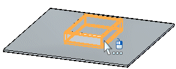
-
Click the steering wheel axis shown.
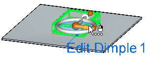
. -
Drag the dimple to a new location.
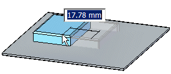
-
Click to save the edit.
Edit a dimple feature
-
Click the dimple to display the edit handle.
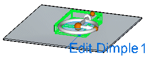
-
Click the edit handle.
The dimple direction arrow, dynamic edit box, and feature profile edit handle are displayed.
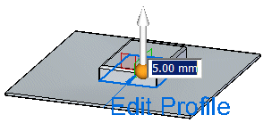
-
Type a value for the dimple extent.
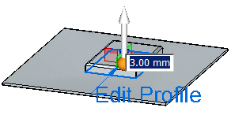
-
Click the handle to change the dimple direction.
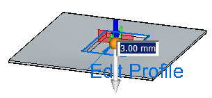
-
Right-click to save the edits.
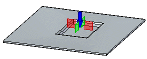
Edit a dimple profile
-
Click the dimple to display the edit handle.
-
Click the edit handle.
The dimple direction arrow, dynamic edit box, and feature profile edit handle are displayed.
-
Click the feature profile edit handle.
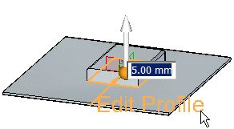
-
Make changes to the existing dimple profile.
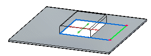
-
Click the green Accept button
 .
.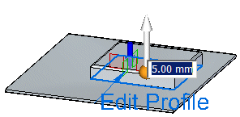
-
Right-click to save the edit.
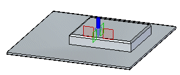
How do I
Construct a dimpleLearn more
Constructing dimplesLook up more details
Dimple commandDimple command bar
Dimple Options dialog box
Dimple command bar